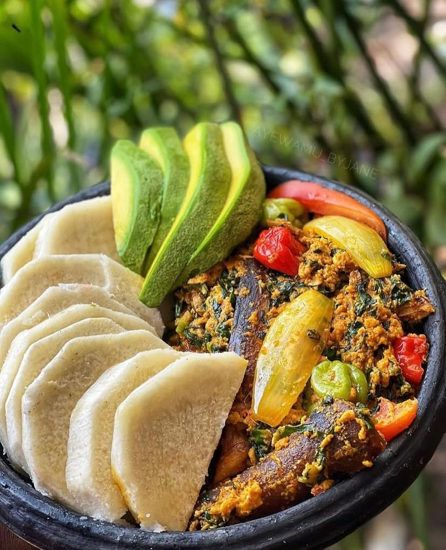

Home
Boiled Yam

Description
Boiled Yam is a simple amd healthy Ghanaian dish. Soft Yam is boiled in saltd water until tender, then served with stew or egg source
It's s a common breakfast and lunch option in Ghana and across West Africa.
Ingredients.
- 1 tuber of yam.
- Water.
- 1 teaspoon of salt.
Steps
- Peel the yam into medium chunks.
- Wash the yam pieces thoroughly with water.
- place in a pot and add enough water to cover it.
- Add salt and bring to boil on medium heat.
- Cook for 20-30mins untill the yam is soft.
- Drain the water and serve hot with your favorite sauce.